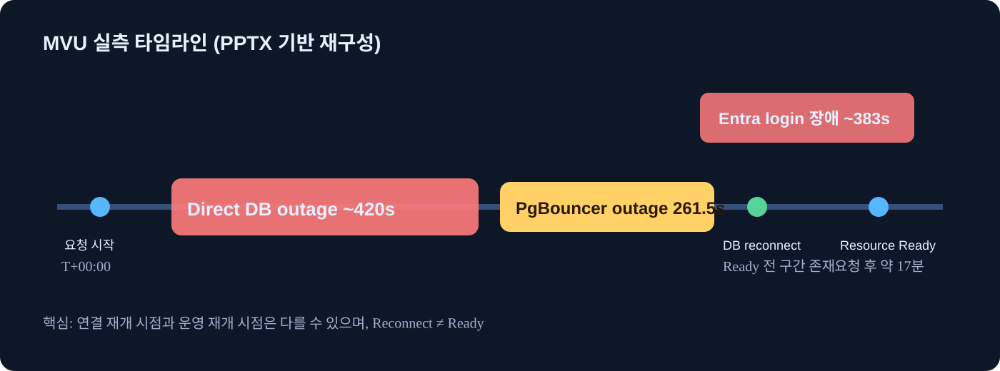
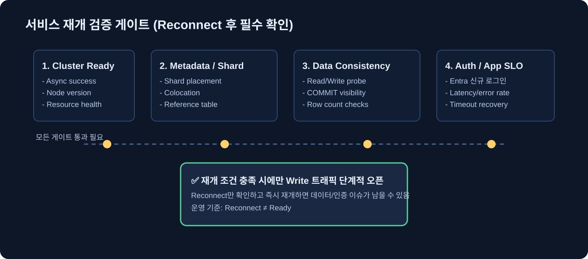
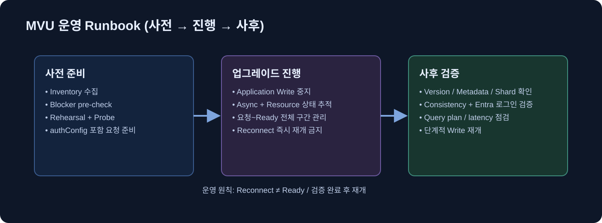

~420초
Direct DB outage
이 페이지는 PPTX 검증 내용을 고객이 빠르게 확인할 수 있도록 재구성한 웹 요약본입니다. 핵심은 Migration 없이 Major Version 업그레이드 가능하다는 장점과, 운영 기준은 단순 reconnect가 아니라 Ready + Data/Auth/App 검증까지라는 점입니다.



실측에서 version-only 요청 시 Entra auth 초기화 이슈를 관찰했습니다. 요청에 authConfig를 명시하고, 업그레이드 후 신규 로그인 검증이 필요합니다.
아니요. Ready, shard/metadata, distributed write consistency, auth, app SLO까지 확인한 뒤 재개해야 합니다.
Public Preview 단계에서는 pre-check → rehearsal → controlled upgrade → post-validation을 표준 절차로 운영하는 것이 핵심입니다.
검증 상세(실험 조건, probe 로그, 운영 적용 범위)는 아래로 문의하세요.